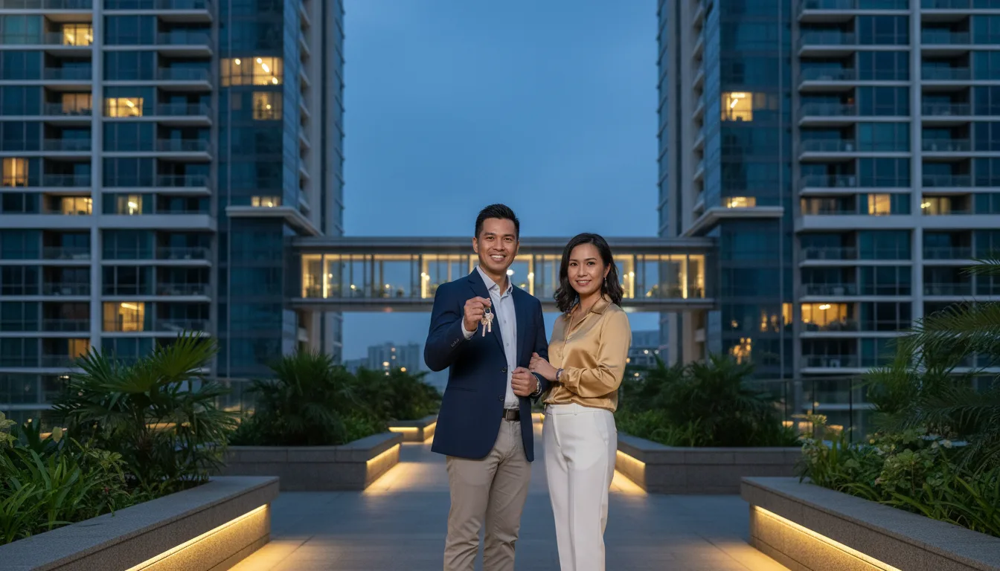

How to Avoid ABSD on a Second Property in Singapore (Legally): A Real Decoupling Case Study

You cannot hide a purchase to dodge ABSD — but you can legally restructure ownership so your next property is not counted as your second. For couples who already co-own a private property, the standard route is decoupling: one spouse sells their share to the other, freeing a name so the next purchase counts as a first property at 0% ABSD. One real client paid about S$5,000 to decouple a condo and avoided roughly S$163,000 in ABSD on the next purchase. It only works on private property, the remaining owner must service the loan solo, and IRAS treats genuine decoupling differently from contrived "99-1" schemes.
To be clear, this is about legal tax planning, not dodging tax. Genuine decoupling — a real transfer of a co-owned property at market value, with Buyer's Stamp Duty paid and one owner truly exiting — is a recognised, lawful transaction. It is not the contrived "99-1" scheme IRAS clawed back in 2023. IRAS judges arrangements on substance and purpose under its anti-avoidance powers, so anything engineered purely to sidestep duty can be challenged. See exactly where IRAS draws the line below, and always take advice from a conveyancing lawyer on your own facts.
- What counts as a "second property" for ABSD
- The real case — a Yishun condo and a freed name
- The numbers: ~S$5k spent, ~S$163k ABSD avoided
- Why the ownership split you choose at purchase matters
- The flip side — the 50/50 trap
- The legal route, step by step
- Is this still legal in 2026? The IRAS 99-1 crackdown
- When decoupling works — and when it doesn't
- Other ways people try to avoid ABSD
- FAQ
What Counts as a "Second Property" for ABSD
Additional Buyer's Stamp Duty is charged on the number of residential properties you own after a purchase — not on whether you "need" a second home. For married couples, the catch is that the household is assessed together: if a property sits in either spouse's name, a joint purchase of the next one is taxed at the higher second-property rate.
| Buyer profile | 1st property | 2nd property | 3rd+ |
|---|---|---|---|
| Singapore Citizen | 0% | 20% | 30% |
| Singapore PR | 5% | 30% | 35% |
| Foreigner | 60% | 60% | 60% |
| Entity / Trust | 65% | 65% | 65% |
So a Singapore Citizen couple who jointly own one condo will pay 20% ABSD on the full price of a second — S$200,000 on a S$1,000,000 purchase. The way to get back to 0% is not a loophole; it is to make sure the person buying the next property genuinely owns no residential property at the time. That is exactly what decoupling does. ABSD is charged on the higher of price or valuation and falls due within 14 days of signing the purchase document.
The Real Case — a Yishun Condo and a Freed Name
In 2015 a young married couple, both Singapore Citizens, sold their HDB flat and bought a private condominium in Yishun for S$1,200,000. At that point they needed both incomes to qualify for the loan, so both names had to be on the mortgage.
When I structured that loan, I asked the question I ask every couple: what is the plan after this one? They told me they hoped to own a second condominium in the future. That single answer changed how we held the property. Instead of the default 50/50 joint tenancy, I advised them to hold it as tenants-in-common in a 99-1 split — 99% to the wife, 1% to the husband. It cost nothing extra at purchase, and it pre-positioned them for a clean, cheap decoupling later. (See joint tenancy vs tenancy-in-common for why the manner of holding matters.)
Decoupling is a genuine part-purchase: one co-owner buys the other's share, with BSD paid on that share and the seller fully exiting the title.
By 2021 their incomes had grown and they were ready to buy. We decoupled the Yishun condo: the husband sold his 1% share to the wife, who could now service the remaining loan on her income alone. His name was freed of any property count. He then bought a new launch condominium (a building-under-construction unit) at S$1,358,000 — and because he now owned no other property, it was treated as his first property at 0% ABSD.
The unit he bought, a 689 sqft two-bedder, has since been valued at around S$1,800,000 — a paper gain of about S$442,000. None of which would have happened the same way had the second purchase been taxed at the second-property rate.
The Numbers: ~S$5k Spent, ~S$163k ABSD Avoided
Here is the full arithmetic. The second condo was bought in April 2021, when the second-property ABSD rate for a Singapore Citizen was 12%. The decoupling itself cost almost nothing because of the 99-1 structure.
| Item | Amount |
|---|---|
| Yishun condo (2015 purchase) | S$1,200,000 |
| Ownership held as | 99% wife / 1% husband |
| 1% share bought out (2021) | ~S$13,000 |
| BSD on the 1% share | ~S$130 |
| Legal / conveyancing | ~S$5,000 |
| Total cost to decouple | ~S$5,130 |
| 2nd condo (new launch, Apr 2021) | S$1,358,000 |
| ABSD if bought as a 2nd property (12%) | S$162,960 |
| ABSD actually paid (1st property) | S$0 |
| ABSD legally avoided | ~S$163,000 |
| 2nd condo estimated value (2026) | ~S$1,800,000 |
| Capital gain to date | ~S$442,000 |
And the strategy is worth more today, not less. ABSD on a second property for a Singapore Citizen rose to 20% from 27 April 2023. The identical move on the same S$1,358,000 purchase would now avoid S$271,600 in ABSD. As the rate climbs, the value of freeing a name climbs with it.
Why the Ownership Split You Choose at Purchase Matters
This is the part most buyers miss, and it is where good advice pays for itself years in advance. Decoupling costs Buyer's Stamp Duty on the share being transferred. The size of that share is set the day you buy.
- Held 50/50: decoupling means buying out a 50% share. On a ~S$1.3M property that is a ~S$650,000 transfer — BSD of roughly S$15,000–S$20,000, plus the cash or CPF to fund the buyout.
- Held 99-1: decoupling means buying out a 1% share — about S$13,000 of value, so BSD of about S$130.
Same end result, the name is freed either way — but the 99-1 couple paid roughly a hundred dollars where a 50/50 couple would pay tens of thousands. That is the entire reason I asked about their future plans in 2015. The cheapest decoupling is the one you plan for before you sign the Option to Purchase, because reallocating shares later is itself a taxable transfer. For comparison, our full decoupling cost and process guide walks through a 50/50 landed example where the buyout BSD alone runs to about S$84,600.
One important point on legality: holding your own home as 99-1 is a lawful manner-of-holding choice — it avoids no duty at the time of purchase, because a first home is 0% ABSD either way and BSD is paid on the full value regardless of the split. The ABSD saving comes only later, from a genuine transfer where full BSD is paid on the share and the exiting owner really gives up ownership. What it is not is adding a 1% co-owner to a property purely to dodge ABSD on a purchase happening at the same time — that is the arrangement IRAS strikes down. If a split has no purpose other than avoiding duty, IRAS can disregard it, so have a conveyancing lawyer confirm your structure.
The Flip Side — a Couple Who Didn't Plan (the 50/50 Trap)
The contrast makes the lesson land. Another couple came to me after they had already bought their condo — jointly, in the default 50/50 manner of holding. They also knew they wanted a second property one day; they simply hadn't structured for it. So when they decided to decouple, the only share to transfer was a full 50% — a genuine transaction, but a far bigger one.
On a roughly S$1,500,000 condo, that meant one spouse buying out a S$750,000 half-share. The Buyer's Stamp Duty alone came to about S$17,100 — over a hundred times what the 99-1 couple paid — before any legal fees. The buying spouse also had to fund the whole S$750,000 transfer, and the selling spouse had to refund the CPF they'd used for their half, with accrued interest, back into their own CPF account.
| At decoupling | Planned 99-1 | Default 50/50 |
|---|---|---|
| Share transferred | 1% (~S$13k) | 50% (~S$750k) |
| BSD on the buyout | ~S$130 | ~S$17,100 |
| Cash / CPF to fund the transfer | Minimal | Substantial |
| CPF refund + accrued interest | Negligible | Sizeable — must be planned |
It still made sense — the ABSD avoided on their next purchase outweighed the cost — but only because we mapped the cash and CPF flows months ahead: confirming the staying owner passed TDSR solo, sizing the buyout against their cash and CPF, and timing it past the SSD window. Had they held 99-1 from day one, that S$17,100 would have been about S$130. Same legal route, a five-figure difference — decided years earlier by a single line in the Option to Purchase.
The Legal Route, Step by Step
The freed name bought a new-launch condo as a first property — 0% ABSD instead of the second-property rate.
Decoupling is a real conveyancing transaction, not a paper trick. The sequence:
- 1Value it and check the math. Get the current valuation, compute the BSD on the share to be transferred plus legal fees, and confirm that figure is far below the ABSD you would otherwise pay. If it is not, decoupling is the wrong tool.
- 2Confirm the staying owner qualifies solo. The spouse keeping the property must refinance the outstanding loan into their sole name and pass TDSR at 55%, stress-tested at the MAS 4% floor, on their income alone. This is the make-or-break step.
- 3Execute the part-purchase. Conveyancing lawyers transfer the exiting owner's share at market value. The buying spouse pays BSD on that share; the exiting spouse refunds any CPF used plus accrued interest to their own CPF.
- 4Free name buys the next property. The exiting owner now owns zero residential property, so the next purchase — resale or new launch — is a first property at 0% ABSD for a Citizen.
Start to finish, a decoupling typically takes a few weeks to complete, governed by the refinancing and the existing bank's redemption notice. Plan it well before you need the freed name ready to buy.
Is This Still Legal in 2026? The IRAS 99-1 Crackdown
This is the question every reader should be asking, because the term "99-1" has two very different meanings — and IRAS came down hard on one of them.
What IRAS acted against (from April 2023): a contrived scheme where a buyer who already owned property (and would owe ABSD) had a first-timer buy 100% of a property first, then quickly sold them a 1% share — splitting a single purchase so the property-owning party paid ABSD on only 1% instead of the whole. IRAS treats these as one arrangement, claws back the full ABSD and adds a 50% surcharge. That is tax avoidance, and it is being audited and penalised.
What genuine decoupling is: two people who actually co-own a property — in this case a home lived in for six years — where one sells their entire share to the other at market value, BSD is paid, and the seller truly relinquishes ownership. Any later purchase is a separate, real transaction. The couple in this case held a 99-1 split at the original 2015 purchase of their only home, when no ABSD was being dodged (a first property is 0% anyway), and decoupled six years later. Nothing was contrived to sidestep a concurrent purchase.
The line that matters: the crackdown was on splitting one purchase to dodge ABSD on it, not on a couple restructuring a long-held home and buying again later. Genuine decoupling remains a recognised, legal transaction in 2026. Because the facts of each case decide which side of that line you sit on, always have a conveyancing lawyer confirm your specific situation before you act.
IRAS doesn't only look at the paperwork. Under its anti-avoidance powers (Section 33A of the Stamp Duties Act) it weighs the substance and main purpose of an arrangement. A genuine sale of a real ownership stake stands up; a structure with no purpose other than sidestepping duty can be disregarded, with the duty recovered and a 50% surcharge added. The safeguard is simple: keep it real, pay the BSD due, document a genuine transfer, and don't contrive the timing.
It's not only IRAS watching. In Wong Mei Lee Millie v Ngor Shing Rong Jake [2026] SGCA 27 — a Singapore Court of Appeal decision in May 2026 over a Bukit Timah condo held 99:1 by a former couple — the woman kept her 99% share — precisely because the court found the split reflected genuine ownership, not a device. But the court also flagged the flip side: the arrangement had involved transferring a 1% share to free a name for ABSD purposes, and it signalled that where a 99-1 split hides a real beneficial interest purely to avoid ABSD, that dishonest, illegal purpose would make it “extremely rare” for the party relying on it to recover — while stressing “the serious nature of tax evasion.” The line is the same one above: genuine ownership and a real transfer stand up; a contrived structure does not. Always take legal advice on your own facts.
When Decoupling Works — and When It Doesn't
It works when
- The property is private (condo, EC after MOP, landed).
- The staying owner can service the whole loan on their own income under TDSR.
- The property has been held past the SSD window (see Seller's Stamp Duty — now a 4-year holding period), so no SSD applies to the transfer.
- The ABSD saved far exceeds the BSD-on-share plus legal cost — most decisive when the share is small (99-1) and the next purchase is large.
It doesn't work when
- The property is an HDB flat — HDB bars part-share transfers between owners except on grounds like divorce or financial hardship.
- The staying owner can't pass TDSR alone — the loan can't be refinanced into one name, so the decoupling stalls.
- The property was held 50/50 and the buyout BSD eats most of the ABSD you hoped to save.
- You are a foreigner — ABSD is 60% on a first property anyway, so freeing a name doesn't help.
Other Ways People Try to Avoid ABSD
Decoupling is the mainstream route for couples who already co-own. The alternatives, and their catches:
| Approach | How it works / the catch |
|---|---|
| Buy the first property in one name only | If one income qualifies, hold property one solo from the start — the other name stays free for property two. No decoupling cost later. Best when planned early. |
| Buy in an adult child's name | The child must be 21+, own no property, and qualify for the loan on their own income. Their first-timer status is then "spent". |
| ABSD married-couple remission | A married couple buying a replacement matrimonial home can claim a refund of the ABSD on the second — but must sell the first within 6 months of buying (completed property). You don't keep both. |
| "99-1" split to dodge a concurrent purchase | Illegal. Audited by IRAS, clawed back with a 50% surcharge. Not the same as genuine decoupling. |
| Buying through a trust or company | ABSD (Trust) and entity ABSD are 65% upfront. Almost never cheaper for a home. |
For most existing owners eyeing a second property, decoupling is the only route that lets you keep both homes and still reset to first-property ABSD on the new one.
Frequently Asked Questions
You can't conceal a purchase, but you can legally restructure ownership so your next purchase isn't counted as your second. For couples who co-own a private property, the usual route is decoupling: one spouse sells their share to the other, freeing a name so the next purchase is a first property at 0% ABSD for Citizens. It works only on private property, the staying owner must qualify for the loan alone, and the BSD plus legal cost must be smaller than the ABSD saved.
A Singapore Citizen pays 20% on a second residential property and 30% on a third. A PR pays 5% on the first and 30% on the second. A foreigner pays 60% on any residential purchase, and an entity or trust pays 65%. ABSD is on the higher of price or valuation, due within 14 days.
Mainly BSD on the share transferred plus legal fees of a few thousand dollars per side. With a 99-1 split, BSD on the 1% share is often around a hundred dollars; with a 50/50 split it can be tens of thousands. Add any CPF refund with accrued interest and loan redemption costs.
Yes. Genuine decoupling of a property actually co-owned for years — one party selling their share at market value and truly exiting — remains legal. IRAS acted against the different, contrived "99-1" scheme that split one purchase to dodge ABSD on it, clawing back the tax plus a 50% surcharge. Confirm your facts with a conveyancing lawyer.
No. Since 2016 HDB doesn't allow owners to transfer part of a flat between each other except on specific grounds such as divorce, marriage, death or financial hardship. Decoupling to free a name is a private-property strategy only.
Yes. After decoupling, the staying spouse refinances the loan into their sole name and must pass TDSR (55%, stress-tested at 4%) on their income alone. If they can't service it solo, the decoupling won't be approved — the most common reason these plans fail.
Choosing how you hold your own home — 99-1 tenants-in-common instead of 50/50 — is a lawful manner-of-holding decision, and you pay no less duty at purchase for it. It simply makes a later genuine decoupling cheaper, because BSD is then charged on a 1% share rather than 50%. What's not allowed is adding a co-owner purely to dodge ABSD on a concurrent purchase. Decide the structure before you sign the Option to Purchase, and confirm it with your conveyancing lawyer.
Thinking About a Second Property? Check the Math First.
Nexus Mortgage SG models whether decoupling actually saves you money — the BSD on your share, whether the staying owner passes TDSR solo, and the ABSD you'd avoid — then compares all 16 banks to refinance the freed loan. Independent, and at no cost to you.
Start My Free Report →Have a specific case? WhatsApp Dan Ler at +65 8752 0859 for a free, no-obligation decoupling and ABSD review. Banks pay our fee — you pay nothing.
Run your numbers: affordability calculator · current rates.

About the author — Dan Ler has advised on Singapore home loans since 2017 at Nexus Mortgage SG, an independent brokerage comparing 16+ MAS-regulated lenders. The case in this article is a real client he advised — structured 99-1 at purchase, decoupled six years later, second property bought ABSD-free. Banks pay Nexus on disbursement, so there is no cost to the borrower.
Nexus Mortgage SG is an independent Singapore mortgage advisory. This article is general information, not legal, tax or financial advice, and client figures are rounded and anonymised. ABSD, BSD, SSD, TDSR and CPF rules are governed by IRAS, MAS, HDB and CPF policy; rates and positions reflect 5 June 2026 and can change. Decoupling has legal and tax consequences that depend on your specific facts — always engage a conveyancing lawyer and confirm with IRAS before acting. This article does not encourage tax avoidance: IRAS can disregard arrangements that lack genuine commercial substance under its anti-avoidance provisions (s33A Stamp Duties Act) and recover duty with a surcharge. Sources: IRAS ABSD, IRAS Buyer's Stamp Duty, MAS TDSR, IRAS SSD, CPF home ownership.